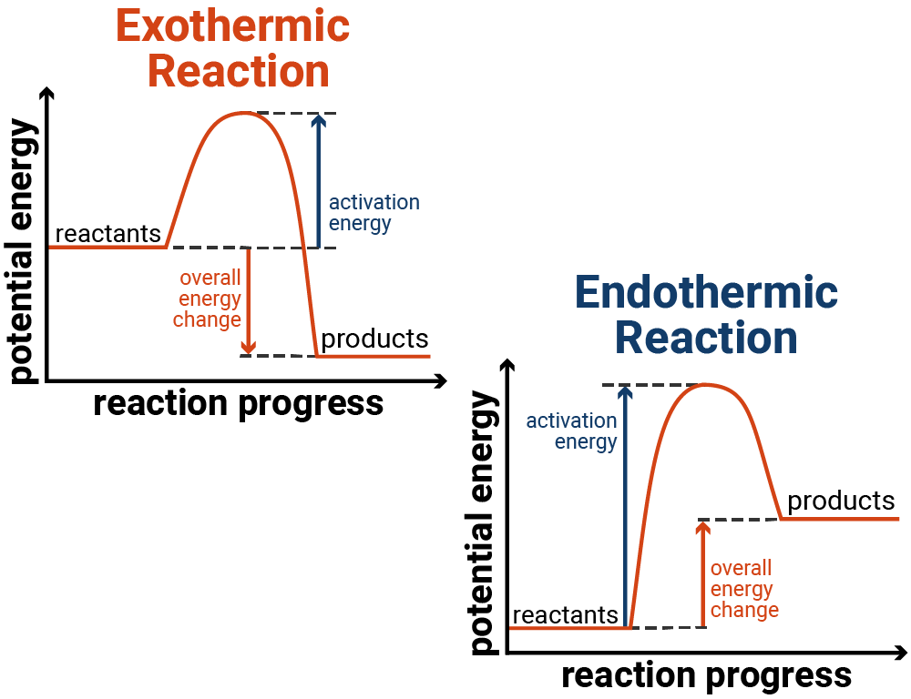

Exothermic, endothermic, combustion, thermal decomposition, reaction profiles and 20-question CFU.
Learn Exothermic reactions transfer energy to the surroundings, so the temperature of the surroundings increases. Endothermic reactions take in energy from the surroundings, so the temperature of the surroundings decreases.
Check Use the model above to answer the questions.
| Question | Student answer |
|---|---|
| 1. In an exothermic reaction, what happens to the temperature of the surroundings? | |
| 2. In an endothermic reaction, what happens to the temperature of the surroundings? | |
| 3. Which graph shape shows an exothermic reaction? | |
| 4. Which graph shape shows an endothermic reaction? |
Learn Reaction profile diagrams show the energy of reactants and products during a reaction. The hump shows the activation energy. In an exothermic reaction, products are lower in energy than reactants. In an endothermic reaction, products are higher in energy than reactants.

Check Answer the questions using the reaction profile image.
| Question | Student answer |
|---|---|
| 1. In an exothermic profile, where are the products compared with the reactants? | |
| 2. In an endothermic profile, where are the products compared with the reactants? | |
| 3. What does the hump on a reaction profile show? | |
| 4. Which reaction transfers energy to the surroundings? |
Learn Combustion needs fuel, oxygen and heat. Complete combustion happens when there is enough oxygen and produces carbon dioxide and water. Incomplete combustion happens when oxygen is limited and can produce carbon monoxide and soot/carbon.
Check Use the model to answer the questions.
| Question | Student answer |
|---|---|
| 1. What are the products of complete combustion of a hydrocarbon? | |
| 2. What can form when oxygen is limited? | |
| 3. What happens to the flame when oxygen is limited in this model? |
Learn Thermal decomposition is a reaction where one compound breaks down into two or more simpler substances when heated. The reaction should be read from left to right: reactant → products.
Check Use the model to answer the questions.
| Question | Student answer |
|---|---|
| 1. What is thermal decomposition? | |
| 2. What are the products when copper carbonate thermally decomposes? | |
| 3. Which direction should the reaction model be read? |
Check Read each example and choose the reaction type. Use the clues in the reaction, not just the keywords.
| Question | Student answer |
|---|---|
| 1. Magnesium reacts with oxygen and burns with a bright flame. What type of reaction is this? | |
| 2. Copper carbonate is heated and breaks down into copper oxide and carbon dioxide. What type of reaction is this? | |
| 3. Hydrochloric acid reacts with sodium hydroxide to form sodium chloride and water. What type of reaction is this? | |
| 4. Iron reacts with oxygen to form iron oxide. What type of reaction is this? | |
| 5. Water freezes into ice. Is this a chemical reaction? | |
| 6. Calcium carbonate is strongly heated and forms calcium oxide and carbon dioxide. Which clue shows this is thermal decomposition? |
1. Exothermic reactions transfer energy...
2. Endothermic reactions make surroundings...
3. Combustion needs fuel, oxygen and...
4. Thermal decomposition uses...
5. Activation energy means...
6. Complete combustion produces carbon dioxide and...
7. Temperature changes from 21 °C to 36 °C. Calculate the temperature rise.
8. Temperature changes from 24 °C to 17 °C. Calculate the temperature change.
9. Convert 2.5 kJ to J.
10. Convert 750 J to kJ.
11. A reaction releases 1200 J over 4 seconds. Calculate J/s.
12. Which profile is exothermic?
13. Explain why an endothermic reaction feels cold.
14. Explain why combustion is exothermic.
15. Explain why a catalyst lowers the energy needed to start a reaction.
16. Explain thermal decomposition using copper carbonate.
17. Suggest one control variable in a temperature-change practical.
18. Explain why repeated readings improve the practical.
19. A reaction transfers 3.6 kJ in 12 s. Calculate J/s.
20. Evaluate one limitation of using temperature change only to compare reactions.